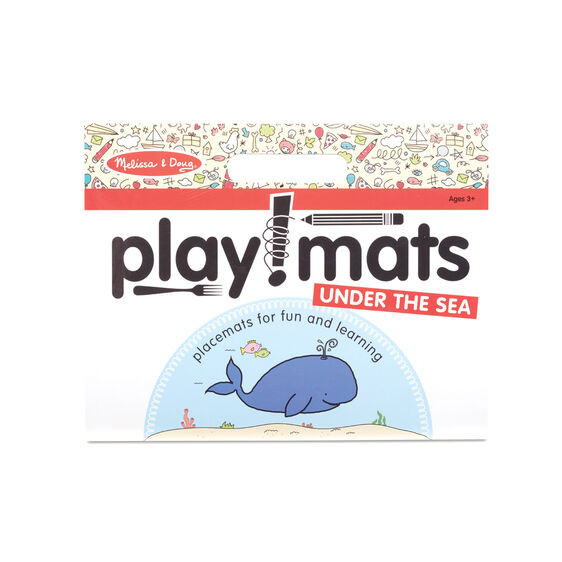
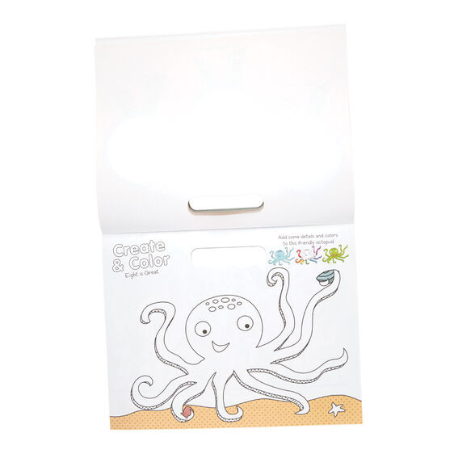
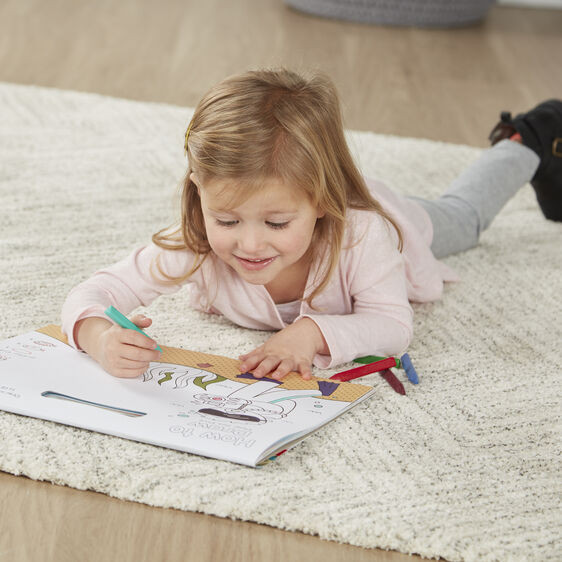

Play Mats - Fun Activity Pad - Under the Sea
Arts and Crafts
R16024-page coloring and activity pad with an ocean theme for fun and learning Coloring, cutting, and creative activities include completing partial pictures, learning to draw, practicing patterning and counting, finding matching pictures, and more High quality white bond paper tears cleanly away from the pad, perfect for use as entertaining recyclable placemats for kids Helps promote fine motor skills, letter and number skills, color recognition, creative expression Makes a great gift for preschoolers to school-aged kids, ages 3 to 7, for hands-on, screen-free play 14
Enquire about this product

Play Mats - Fun Activity Pad - Under the Sea at Kids Corner KZN
Play Mats - Fun Activity Pad - Under the Sea is part of our Arts and Crafts collection. Kids Corner KZN stocks toys for learning, pretend play, creative play, gifting and everyday childhood discovery in South Africa.
Browse more Arts and Crafts toys